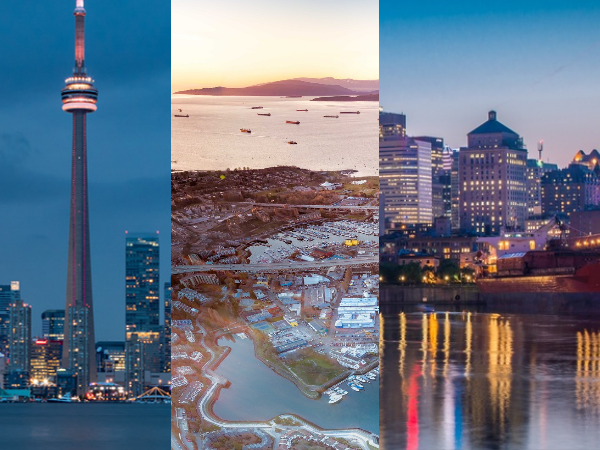

My Dream Car | My Favorite Vacation Spot | Where I was born |
My Favorite Show |
My Favorite Movie Series | My Favorite Video Game |
Current Fashion Trends | Citation Page
Canada is a country located in North America. Canada is along the border of the United States. From the north to the south it reaches over half the Norther Hemisphere. From east to west it measures over 7560 kilometers that span to six different time zones. It is known as the second largest country in the world while having a very small population of 0.5% of the worlds population. Canada is known for its famous landmarks, history, food, culture, and outdoor activities.
Learn about the history of Canada!Click on a section of the image to learn about Toronto, Vancouver, and Montreal!
Here are some celebrities that lived in Canada:
| Celebrity Name | Location |
|---|---|
| Drake | Toronto, Ontario |
| Justin Bieber | Stratford, Ontario |
| Jim Carrey | Toronto, Ontario |
| Keanu Reeves | Toronto, Ontario |